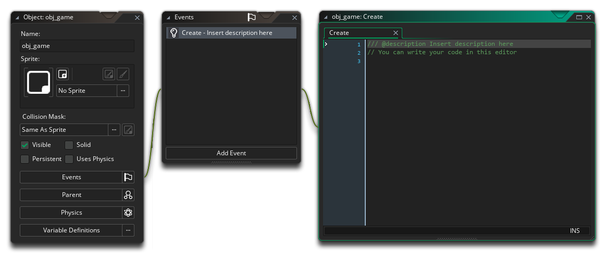
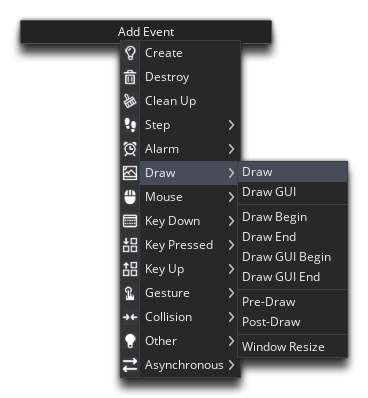
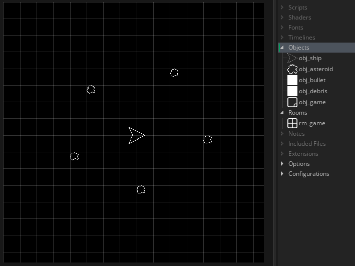
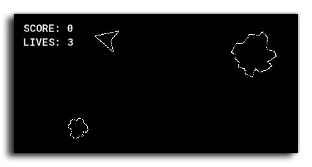

In this chapter we're going to be creating lives and score to make our game more interesting, as well as a few more rooms to deal with different game "states".
To get started we're going to make a new object. This will be a "controller" object, which means that we won't be assigning it a sprite as it's going to sit in a room and deal with things "behind the scenes". So, make a new object now and call it "obj_game" and give it a Create Event:

We want this object to track the player's score and lives values, so we'll just use the built-in global variables score and lives. A global variable is basically a variable that has no "owner". It belongs to the entire game, and not one particular object, and can be accessed and changed by everything at anytime.
Add these lines into the Create Event:
score = 0;
lives = 3;
We want to show these values to the player too, so for that we'll add in a Draw Event:

As the name implies, this event will draw things to the screen. Like the Step Event, it will run every game frame, otherwise the things you drew would only be visible for one frame and then disappear. We want to use it to display the player score and lives, so we'll use the draw_text() function for this. Add the following code now:
draw_text(20, 20, "SCORE: " + string(score));
draw_text(20, 40, "LIVES: " + string(lives));
You'll notice we call the function string() on the global variables. This is because you can't add two values that are of different data types, and in this case we have a string "SCORE:" and a number (the value of the score global variable). To avoid this issue, we use the string() function to turn the value of score into a string data type - so if the score was 300, string(score) would return "300", and that can then be added onto the "SCORE: " string (adding strings like this, concatenates them).
We can now add this controller object into the room, so open up the room "rm_game" and drag an instance of this object up to the (0,0) position in the room (you'll see it is shown with a (?) symbol in the room editor - this is because we haven't assigned it a sprite):

Press play now and test the game! The score and lives values should be displayed in the top-left corner:

Click the "Next" button to see how to set a font for drawing the values...